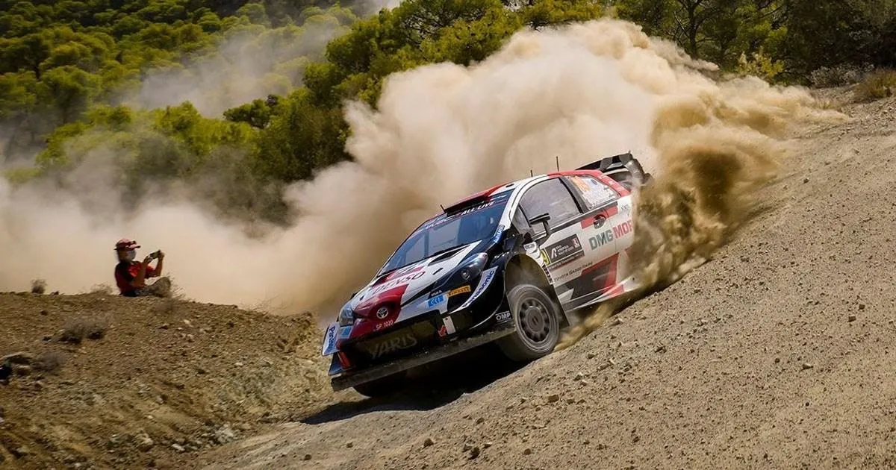
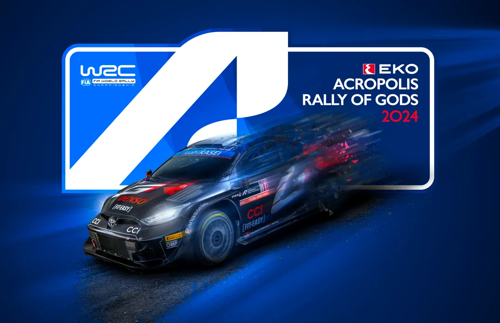
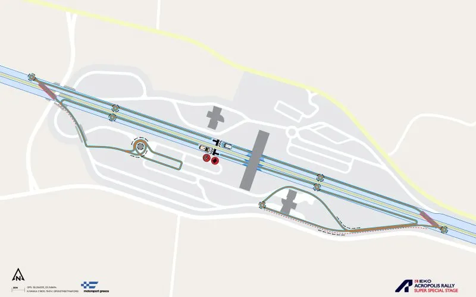
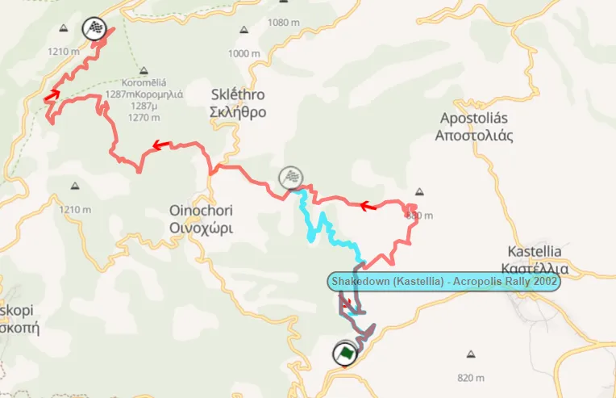

Ράλλυ Ακρόπολις 2024 - Ανάλυση των Ειδικών
Το 68ο Ράλλυ Ακρόπολις, το 4ο μετά από την επιστροφή του εθνικού μας αγώνα στο καλεντάρι του WRC, έχει αλλαγές σε σχέση με προηγούμενα έτη. Έχουμε την επιστροφή κάποιων ειδικών από το 2021, υπάρχουν 2 ειδικές που δεν έχουμε ξαναδεί στο Παγκόσμιο Πρωτάθλημα, και ακόμη απουσιάζουν οι Βωξίτες και η εκκίνηση κάτω από τον βράχο της Ακρόπολης. Αυτή θα είναι η τελευταία φορά που ο εθνικός μας αγώνας θα διεξαχθεί το Φθινόπωρο, καθώς από το 2025 επιστρέφει στην κλασική του θέση στο πρόγραμμα, τον Ιούνιο!

Πέμπτη
Η Πέμπτη είναι αρκετά μικρή φέτος, με μόνο το Shakedown και την εκκίνηση στην Λαμία. Το shakedown της Λυγαριάς είναι το ίδιο με αυτό του 2022. Είναι μία καλή αναπαράσταση των δρόμων που θα χρησιμοποιηθούν στον αγώνα, αλλά δεν είναι ιδανικό για τους θεατές, καθώς δεν υπάρχουν άλλες προσβάσεις πέρα από την εκκίνηση και τον τερματισμό. Μετά το Shakedown, τα πληρώματα δεν θα χρειαστεί να πάνε στην Αθήνα, αντ' αυτού θα βγουν λίγο έξω από το Service Park για την εκκίνηση του αγώνα.
Onboard του Shakedown
Παρασκευή
Η Παρασκευή είναι η μεγαλύτερη ημέρα του ράλλυ, με 135 αγωνιστικά χιλιόμετρα. Αποτελείται από δύο περάσματα τριών ειδικών διαδρομών, άρα σε αντίθεση με πέρσι ή άλλες χρονιές, ο πρωτοπόρος του πρωταθλήματος δεν θα "υποφέρει" τόσο από το road cleaning. Η ημέρα είναι παρόμοια με το Σάββατο του Ακρόπολις του 2022.
Η SS1/4 Άνω Πάυλιανη, ε΄΄ιναι η πρώτη ειδική του αγώνα, και δεν έχει χρησιμοποιηθεί ποτέ ξανά σε αυτή τη μορφή. Είναι ουσιαστικά ένας συνδυασμός της ειδικής Κουμαρίτσι που έχει να χρησιμοποιηθεί από το 2005 και της κλασικής Παύλιανης που ήταν στο πρόγραμμα και πέρυσι. Οι διοργανωτές επέλεξαν να χρησιμοποιήσουν αυτή την διαδρομή αντί της κλασικής έκδοσης, λόγω πιθανών προβλημάτων με βροχή και ομίχλη, όπως το 2023 και το 2021, που καθιστούσαν πολύ δύσκολη την αναγνώριση της ειδικής. Αυτό σημαίνει ότι οι Καταβόθρες, και το τμήμα στο οποίο ο Thierry Neuville εγκατέλειψε πέρυσι, θα απουσιάζουν.

Η Άνω Παύλιανη του 2024
Με πράσινο το Κουμαρίτσι του 2005 και με γαλάζιο η κλασική Παύλιανη.
Η ειδική ξεκινά με ε΄να ανηφορικό κομμάτι 7 χιλιομέτρων, σε έναν σχετικά γρήγορο δρόμο με ωραίο flow. Τα επόμενα 10 χιλιόμετρα δεν έχουν ξαναχρησιμοποιηθεί ποτέ. H ειδική εξακολουθεί να είναι ανηφορική, και από τις δορυφορικές εικόνες, στρίβει σε έναν φαινομενικά στενότερο δρόμο, που μετά από ένα σύντομο τεχνικό τμήμα, γίνεται αρκετά γρήγορος για περίπου 2χλμ, πριν από ένα δύσκολο, ελικοειδές κατά διαστήματα τμήμα 6 χιλιομέτρων. Μετά από αυτό, επανέρχεται στην κλάσικη διαδρομή της Παύλιανης μόνο με αντίθετη φορά, κάτι που έχουμε να δούμε στο WRC από το 1996! Η ειδική ύστερα κατηφορίζει, σε έναν μεσαίας ταχύτητας δρόμο, με μερικά πιο γρήγορα τμήματα προς τον τερματισμό.
Τα πρώτα 7 χιλιόμετρα της ειδικής είναι ίδια με το Κουμαρίτσι του 2005.
Η SS2/5 Δάφνη είναι το δεύτερο μισό του Πύργου, που ήταν στον αγώνα το 2021 και το 2022. Είναι μια τεχική ειδική, και πιθανόν η πιο αργή του ράλλυ!

Με γαλάζιο ο Πύργος του 2022, και με κόκκινο η φετινή ειδική της Δάφνης
Η ειδική έχει πολλές αλλαγές υψομέτρου, καθώς και αλλαγές ρυθμού. Η Δάφνη ξεκινά με ένα πολύ τεχνικό τμήμα, σε έναν σκληρό, στενό δρόμο. Περίπου 5 χιλιόμετρα από την εκκίνηση, η ειδική περνά μέσα από το ομώνυμο χωριό, με τα πληρώματα να πρέπει να περάσουν από έναν στενό ασφαλτοστρωμένο δρόμο που περνά μέσα από το χωριό! Μετά από αυτό, η ειδική γίνεται πιο γρήγορη προς στιγμήν, πριν γίνει και πάλι τεχνική. Μετά από άλλο ένα πέρασμα από το χωριό Ανατολή στα 13 χιλιόμετρα, ο δρόμος γίνεται ταχύτερος και πιο φαρδύς, με την ειδική να τελειώνει με μία σειρά από φουρκέτες, πριν από το χωριό Μάρμαρα. To 2022 o Chris Ingram βγήκε εκτός δρόμου στον Πύργο.
Onboard της ειδικής. Είχε χρησιμοποιηθεί και στο Φθιώτιδος το 2021.
Η τελευταία ειδική του loop είναι η περίφημη διαδρομή του Ταρζάν. Η ειδική χρησιμοποιεί την ίδια διαδρομή όπως πάντα μετά από το 2021. Είναι η πρώτη φορά που χρησιμοποιείται την Παρασκευή και θα μπορούσε να είναι η πιο σκληρή ειδική του loop.
Onboard της ειδικής από το 2021.
Ο Ταρζάν είναι μια τεχνική και σκληρή ειδική. Ξεκινά σε έναν όχι πολύ φαρδύ δρόμο, που είναι τεχνικός και κυρίως μέτριας ταχύτητας. Ο χαρακτήρας της ειδικής παραμένει αμετάβλητος μέχρι τα 15 χιλιόμετρα περίπου. Στη συνέχεια η ειδική συναντά τον δρόμο από το χωριό Ροβολιάρι και γίνεται πιο γρήγορη και smooth μέχρι τον τερματισμό. Ανάλογα με τις καιρικές συνθήκες, μπορεί να υπάρχουν κάποια στάσιμα νερά και λάσπη, καθώς το ειδική βρίσκεται βαθιά μέσα σε δάσος.
Σάββατο
Το Σάββατο μπορεί να είναι σχετικά μικρό από άποψη αγωνιστικών χιλιομέτρων, μόλις στα 117, αλλά είναι τεράστιο από άποψη απλών διαδρομών, με τα πληρώματα να πρέπει να αντιμετωπίσουν σχεδόν 600 χιλιόμετρα σε σύνολο. Επίσης, δεν υπάρχει κανένα σέρβις και μόνο μία επαναλαμβανόμενη ειδική!
Η SS7 Ρεγκίνι είναι η περσινή Ελάτεια, με ανάποδη φορά. Είναι η μεγαλύτερη ειδική του αγώνα, στα 28.67 χιλιόμετρα. Χρησιμοποιεί ένα mix σκληρών και smooth, αλλά και αργών και γρήγορων δρόμων. Η ειδική ξεκινά με ένα σύντομο γρήγορο κομμάτι σε ένα στενό δρόμο, που μετά γίνεται τεχνικός και ελικοειδής. Στα 5 χιλιόμετρα, βρίσκοντα τα περίφημα "Νερά", μετά από τα οποία η ειδική γίνεται γρήγορη, πιο στενή και πολύ σκληρή. Η ειδική εναλλάσσει χαρακτήρα συνεχώς, με γρήγορα και τεχνικά κομμάτια και σκληρά κομμάτια με πολλές πέτρες, με πολλές εναλλαγές στο οδόστρωμα. Πέρσι υπήρχαν πολλά "ruts" στα πιο αμμώδη κομμάτια. Στα 18 χιλιόμετρα, η ειδική αλλάζει τελείως. Συναντά τον δρόμο της Ελάτειας από το 2021, απλά με αντίθετη φορά. Τα τελευταία 10 χιλιόμετρα είναι σε έναν γρήγορο και smooth δρόμο, μέχρι τον τερματισμό. Πέρσι την Ελάτεια, ο Adrien Fourmaux τέθηκε εκτός συναγωνισμού για την νίκη στο WRC2, μετά από ένα κλατάρισμα.
Τα "Νερά" της Ελάτειας πέρσι. Φέτος τα αυτοκίνητα θα περνούν ανάποδα.
H SS8 Θήβα επιστρέφει μετά από τρία χρόνια απουσίας, με διαφορετικό τερματισμό σε σχέση με το 2021. Είναι μια ειδική με πολλές αλλαγές ρυθμού, με χαρακτηριστικό ότι χρησιμοποιεί πολλόυς διαφορετικούς δρόμους που βρίσκονται στο βουνό.
Το άλμα στην αρχή της ειδικής από το 2012.
Η αρχή της ειδικής έχει ένα τεχνικό, σχεδόν "Μίκυ Μάους" κομμάτι, με τον δρόμο να κάνει ένα μικρό "loop". Στη συνέχεια η ειδική γίνεται πιο γρήγορη, και έχει και ένα άλμα, σε έναν πιο στενό δρόμο. Η διαδρομή αλλάζει συνέχεια από στενούς σε πλατείς δρόμους, και από αργούς και τεχνικούς σε πιο γρήγορους. Φέτος η ειδική δεν θα περνά από το πεδίο βολής. Ακόμη, εν αντιθέσει με το 2021 όπου η ειδική τερμάτιζε σε έναν γρήγορο δρόμο, φέτος η ειδική φεύγει από την ίδια διαδρομή στα 20 χιλιόμετρα, και πάει αριστερά σε έναν τεχνικό δρόμο, και τερματίζει σε ένα κομμάτι γρήγορο, με χασίματα και άλματα!

Οι διαφορές ανάμεσα στη Θήβα του 2021 (με χρυσό) και τη φετινή Θήβα (με κόκκινο).
Μετά από μια μεγάλη απλή, τα πληρώματα φτάνουν στην SS9/11 Άγιοι Θεόδωροι. Η ειδική είναι ουσιαστικά συνδιασμός των δύο ειδικών που ήταν στην περιοχή το 2021. Η ειδική ακολουθά αρχικά την ίδια διαδρομή με τους Άγιους Θεόδωρους του 2021, αλλά στην άσφαλτο στρίβει δεξιά, όχι αριστερά, αποφεύγοντας το ασφάλτινο κομμάτι και το πολύ τεχνικό και σκληρό κομμάτι που κόπηκε πέρσι από το Λουτράκι λόγω των βροχοπτώσεων. Το δεύτερο πέρασμα θα είναι πάρα πολύ σκληρό!

Η ειδική του 2024, και τα κομμάτια που μοιράζεται με τις ΕΔ του 2021.
H ειδική ξεκινά σε έναν ανηφορικό δρόμο, που είναι αμμώδης και τεχνικός. Μετά από περίπου 3 χιλιόμετρα, γίνεται πιο στενή, και αρκετά πιο σκληρή. Το κομμάτι αυτό είναι αρκετά σπαστήρι, και υπάρχουν πολλές λακούβες και χασίματα. Στα 4.4 χιλιόμετρα υπάρχει ένα άλμα που το 2021 ήταν hotspot για πολλούς φωτογράφους. Μετά το άλμα η ειδική γίνεται πιο smooth και γρήγορη για ένα χιλιόμετρο περίπου. Ύστερα από μία φουρκέτα, που είναι και πρόσβαση της ειδικής, ο δρόμος γίνεται πάλι σπαστήρι, με πολλές πέτρες, και σε κάποια κομμάτια φαίνεται το παλιό πλακόστρωτο από τον Β' Παγκόσμιο. Μετά από ένα μικρό ασφάλτινο κομμάτι, η ειδική στρίβει δεξιά και εννώνεται με την ειδική που χρησιμοποιήθηκε στο Ράλλυ Κορίνθου φέτος.
Tα πρώτα χιλιόμετρα της ειδικής, από το 00:00 μέχρι το 16:18
Μετά από αυτό, η ειδική αλλάζει εντελώς χαρακτήρα. Γίνεται πιο γρήγορη, και με πολύ περισσότερο flow, με γρήγορες στροφές με αρκετό κάμπερ. Στα 10.6 χλμ, συναντά τον δρόμο από το Λουτράκι του 2021. Η ειδική συνεχίζει να έχει τον ίδιο χαρακτήρα μέχρι περίπου τα 14 χιλιόμετρα, όπου γίνεται στενή και τεχνική, με πολλές αργές στροφές. Στα 16.6 χλμ είναι το πιο τεχνικό και αργό κομμάτι, που έχει μία διπλή φουρκέτα. Ο δρόμος συνεχίζει να είναι στενός και τεχνικός μέχρι τα 21 χλμ, όπου και η ΕΔ γίνεται πιο φαρδιά και γρήγορη, μέχρι τον τερματισμό.
Tα τελευταία 18 χιλιόμετρα της ειδικής είναι ίδια με αυτά εκείνης του Ράλλυ Κορίνθου. (με μία μικρή αλλαγή στη διπλή φουρκέτα)
Το Λουτράκι είναι ακόμα μία ειδική διαδρομή με ένα μόνο πέρασμα το Σάββατο. Χρησιμοποιεί δρόμους που έχουμε ξαναδεί πολλές φορές στο Ακρόπολις, και είναι ουσιαστικά συνδιασμός της ΕΔ Πίσσια από το 2023, και το Χαρβάτι του 2022. Είναι μια διαδρομή που χρησιμοποιείται συχνά στο Ελληνικό Πρωτάθλημα. Η ίδια διαδρομή έχει επίσης ξαναεμφανιστεί στο Ακρόπολις με άλλα ονόματα, όπως Πίσσια και Χαρβάτι.

Το Λουτράκι του 2024, και τα κοινά κομμάτια από το Χαρβάτι του 2022 και τα περσινά Πίσσια
Η αρχή της ειδικής είναι τεχνική με πολλές αργές στροφές, αλλά μετά το 3ο χιλιόμετρο γίνεται πιο γρήγορη, με ωραία ροή. Στο 9ο χιλιόμετρο συναντά τον δρόμο από το Χαρβάτι. Ο δρόμος αυτός είναι στενός, πάρα πολύ τεχνικός, με πάρα πολλές συνεχόμενες στροφές. Η ειδική τρέχει παράλληλα σε ένα ξεραμένο ρέμα (που ανάλογα με τον καιρό μπορεί να έχει νερό), και ο δρόμος έχει από τη μία πλευρά το βουνό και από την άλλη γκρεμό!
Το 2ο μέρος της ειδικής από το 13:00 και μετά
Μετά το δεύτερο πέρασμα από τους Άγιους Θεοδώρους, οι οδηγοί κάνουν ακόμα μία μεγάλη απλή, αυτή τη φορά για την SS12 EKO SSS.

Χάρτης της φετινής υπερειδικής
Κυριακή
Η Κυριακή είναι η πιο μικρή μέρα του αγώνα, με μόλις 54 χιλιόμετρα. Μπορεί να είναι μικρή, όμως είναι πολύ ποιοτική! Το Οινοχώρι είναι μία καινούρια ειδική, η οποία χρησιμοποιείται για πρώτη φορά στο Ακρόπολις, και το Ελευθεροχώρι είναι ίσως η καλύτερη ειδική του ράλλυ, και είναι και η Wolf Power Stage, όπως ήταν και το 2022.
Το Οινοχώρι είναι μία καινούρια ειδική, και το μόνο που έχει κοινό με παλιά Ακρόπολις, είναι ότι η αρχή της ειδικής είχε χρησιμοποιηθεί ως Shakedown το 2002!

Tο Οινοχώρι του 2024, και με μπλε το Shakedown του 2002. Ευχαριστώ Χάρη για το roadbook του Shakedown!
H ειδική ξεκινά ανηφορικά, σε ε΄ναν δρόμο με φουρκέτες για τα πρώτα 4 χιλιόμετρα. O δρόμος περνάει από ένα νταμάρι, και μετά από αυτό συνεχίζει μέσα στο δάσος. Τα επόμενα 5 χιλιόμετρα είναι γρήγορα, με παρόμοια χαρακτηριστικά με την αρχή της Παύλιανης. Η ειδική ύστερα συναντά την άσφαλτο για κάποια μέτρα, πριν στρίψει δεξιά στον χωματόδρομο προς Παύλιανη. Το κομμάτι αυτό είναι αρκετά πιο τεχνικό και αργό σε σχέση με το προηγούμενο, και επειδή ο δρόμος είναι γεμάτος με δέντρα, το έδαφος κρατάει νερό μετά από υγρασία και βροχή, όπως και ο Ταρζάν! Αν έχει βρέξει τις προηγούμενες μέρες, θα υπάρχει πολλή λάσπη! Τα τελευταία 4 χιλιόμετρα είναι κατηφορικά και πολύ τεχνικά, με πολλές αργές στροφές μέχρι τον τερματισμό.
Onboard της καινούριας ειδικής
Η SS14/15 Ελευθεροχώρι είναι ειδική ορόσημο για το Ακρόπολις, και είναι και η Power Stage του φετινού αγώνα. Η διαδρομή είναι ίδια με πέρσι, αλλά με διαφορετικό τερματισμό. Η ειδική συνεχίζει ευθεία στην διασταύρωση που δυσκόλεψε τους οδηγούς το 2021 και το 2023. Πέρσι στο Ελευθεροχώρι, ο Σεμπαστιέν Οζιέ έσπασε την ανάρτηση του και τέθηκε εκτός διεκδίκησης για τη νίκη.
Onboard της ειδικής από το 2011
Η ειδική ξεκινά με ένα στενό κομμάτι μέτριας ταχύτητας, και μετά από μια σειρά από φουρκέτες γίνεται πιο γρήγορη. Στα 4 χλμ, η ειδική περνά από την ξερή λίμνη της Νευρόπολης και συναντά τον δρόμο από το Παλαιοχώρι. Εκεί η ειδική γίνεται γρήγορη και πιο σκληρή. Ύστερα από ακόμη μία σειρά από φουρκέτες, η ειδική γίνεται πιο πλατιά, και περνά από την λίμνη Σουβάλα, που αποτελεί "Μέκκα" για τους θεατές. Μετά από περίπου ένα χιλιόμετρο, ο δρόμος γίνεται σπαστήρι και πιο στενός, με πολλές πέτρες. Παραμένει ίδιος μέχρι τον τερματισμό. Το δεύτερο πέρασμα το 2023 ήταν πολύ σπαστήρι, και το ίδιο θα είναι και φέτος αν η ειδική παραμείνει στεγνή.
Tι θα άλλαζα
Μια πολύ απλή αλλαγή που θα έκανα θα ήταν το Σάββατο να είναι την Παρασκευή, και η Παρασκευή να ήταν το Σάββατο. Δηλαδή η εκκίνηση στην Αθήνα, με την υπερειδική την ίδια μέρα κάπου στην Αθήνα (και όχι στη μέση της Εθνικής Οδού, μετά από 400+ χιλιόμετρα απλής) την Πέμπτη. Παρασκευή με δύο περάσματα από τους Αγίους Θεόδωρους και ένα από το Λουτράκι, και μετά Θήβα και Ελάτεια. Ίσως να μπορούσε να υπάρχει και ακόμα μία ειδική, όπως και το 2022, πχ Δάφνη, Λιβαδειά ή Βωξίτες (αλλά θα έπρεπε να βγει η Ελάτεια για τους Βωξίτες). Το Σάββατο ίδιο με την υπάρχουσα Παρασκευή με 2 περάσματα από Άνω Παύλιανη, Δάφνη και Ταρζάν, και Κυριακή και αυτή ίδια, απλά με 2 περάσματα από το Οινοχώρι αντί για ένα.


Comments